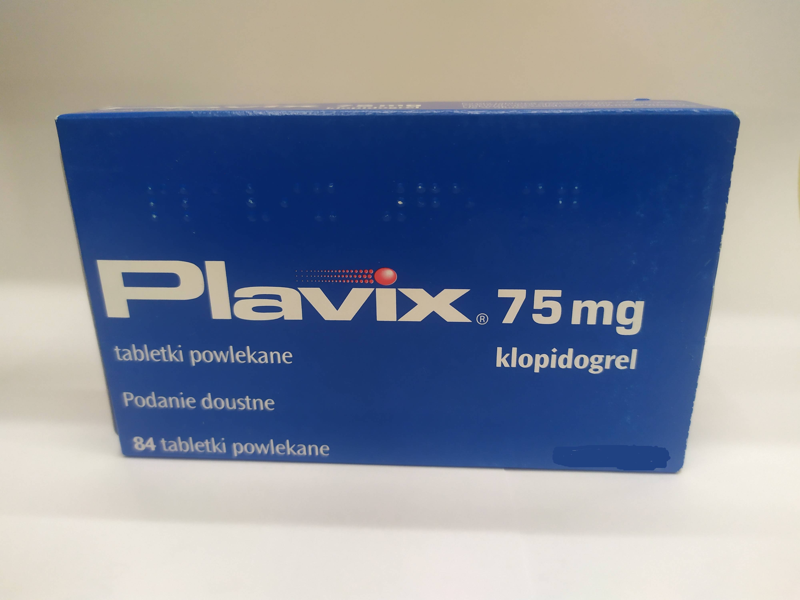

Контактная информация:
Цена: 999 грн/уп.
В наличии
Производитель: Франция
Цена: 999 грн/уп.
В наличии
Именно в FarmItal вы можете купить купить плавикс,plavix,плавикс в Украине, Гарантированно Качественный!
Доставка Plavix осуществляется транспортными компаниями, сроки выполнения заказа оговариваются менеджером Фармитал. Вы можете заказать Плавикс,Плавикс в городах: Одесса, Херсон, Чернигов, Северодонецк, Бердянск, Бровары, Днепр, Винница, Киев, Славянск, Полтава, Краматорск, Белая Церковь, Каменское, Мариуполь, Черновцы, Александрия, Камь янец-подольский, Львов, Запорожье, Кропивницкий, Житомир, Ивано-Франковск, Сумы, Черкассы, Константиновка, Мелитополь, Кривой Рог, Ровно, Луцк, Никополь, Павлоград, Ужгород, Кременчуг, Лисичанск, Хмельницкий, Тернополь, Харьков, Николаев, а также в других населённых пунктах Украины.
Таблетки, покрытые оболочкой.
Клопидогрель селективно ингибирует связывание аденозиндифосфата (АДФ) с рецептором на поверхности тромбоцита и последующую активацию комплекса GPIIb/IIIa под действием АДФ, и, таким образом, ингибирует агрегацию тромбоцитов. Для образования активного ингибитора агрегации тромбоцитов необходима био трансформация клопидогреля. Клопидогрель также ингибирует агрегацию тромбоцитов, индуцированную другими агонистами, путем блокирования повышения активности тромбоцитов высвобожденным АДФ. Клопидогрель не обратно связывается с АДФ-рецепторами тромбоцитов. Следовательно, тромбоциты, вошедшие во взаимодействие с стеклопидогрелем, повреждаются к концу их жизненного цикла,и нормальная функция тромбоцитов восстанавливается со скоростью, соответствующей скорости обновления тромбоцитов. С первого дня применения в повторных суточных дозах 75 мг обнаруживается существенное замедление АДФ-индуцированной агрегации тромбоцитов; это действие прогрессивно усиливается и стабилизируется между 3 и 7 днями. При стабильном состоянии средний уровень угнетения агрегации под действием суточной дозы составляет 75 мг от 40% до 60%. Агрегация тромбоцитов и срок кровотечения возвращаются к исходному уровню в среднем через 5 дней после прекращения лечения.
Рофилактика проявлений атеротромбоза у взрослых:
у больных, перенесших инфаркт миокарда (начало лечения в сроки от нескольких дней до 35 после возникновения), ишемический инсульт (начало лечения в сроки от 7 дней до 6 месяцев после возникновения) или у которых диагностировано заболевание периферических артерий (поражение артерий и атеротромбоз сосудов) нижних конечностей);
у больных с:
острым коронарным синдромом без подъема сегмента ST (нестабильная стенокардия или инфаркт миокарда без зубца Q) в комбинации с ацетилом салициловой кислотой;
острым инфарктом миокарда с подъемом сегмента ST в комбинации с ацетилом салициловой кислотой, у больных, получающих стандартное медикаментозное лечение и которым показана тромболитическая терапия.
Взрослые и больные пожилого возраста. Плавикс назначают по 75 мг один раз в сутки, независимо от приема пищи.
У больных с острым коронарным синдромом без подъема сегмента ST (нестабильная стенокардия или инфаркт миокарда без зубца Q на ЭКГ) – лечение клопидогрелем начинают с однократной нагрузочной дозы 300 мг, а затем продолжают лечение дозой 75 мг один раз в сутки (с ацетил с ) в дозе 75–325 мг/сут). Поскольку применение более высоких доз АСК увеличивает риск кровотечения, рекомендуется не превышать дозу ацетил салициловой кислоты 100 мг. Оптимальная длительность лечения формально не установлена. Результаты клинических исследований свидетельствуют в пользу применения до 12 мес, а максимальный эффект наблюдался через 3 мес лечения.
Самолечение может быть вредным для вашего здоровья! Перед началом лечения обратитесь к вашему врачу!!
Безопасность применения Плавикса исследована более чем на 42 000 пациентов, в том числе более 9000 лиц, курс лечения которых длился 1 год и более. Клинически значимые побочные действия, наблюдавшиеся в исследованиях CAPRIE, CURE, CLARITY и COMMIT, описаны ниже. Применение клопидогреля в дозе 75 мг в сутки хорошо переносилось по сравнению с АСК 325 мг в сутки в исследовании CAPRIE. Общая переносимость Плавикса в этом исследовании была подобна АСК, независимо от возраста, пола и расы.
Хранить в недоступном для детей месте при комнатной температуре (до +25°С).
Срок годности – 3 года.